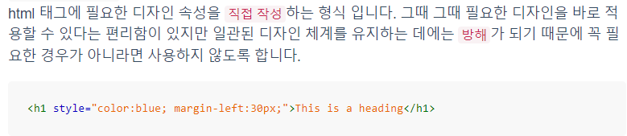
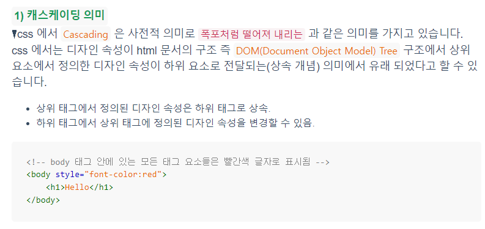
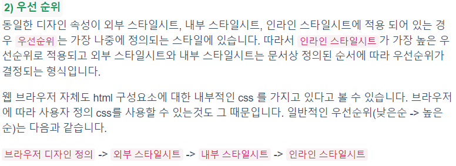

기본 문법
CSS는 선택자(어디를)와 선언부(어떻게 바꾼다)로 구성됩니다.
선택자는 스타일을 지정할 HTML 요소(태그,아이디 등)를 가리킵니다.
선언부에는 CSS 속성 이름과 값이 포함됩니다.
속성이 여러 개일 경우, 한 줄로 나열해도 상관없지만 여러 줄에 걸쳐 작성하는 것이 좋습니다.
선택자 {속성:값; 속성:값....}
예) h1 {color:red; font-size:15px}
주석문 : /*주석*/
스타일의 종류
내부스타일, 외부스타일(별도의 파일로 되어있음), 인라인스타일(태그 속에 들어있음)
내부 스타일

외부 스타일

인라인스타일

this is a heading
다른 h1 형식
캐스캐이딩과 우선순위

